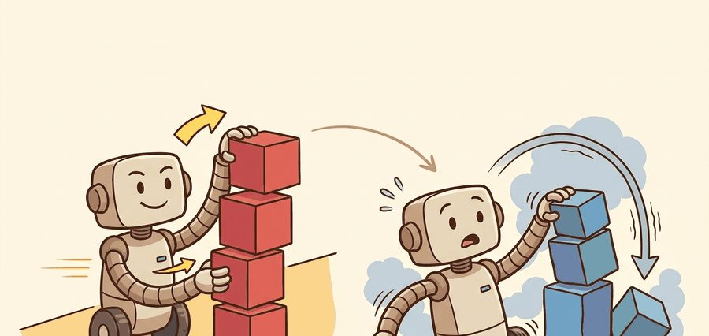
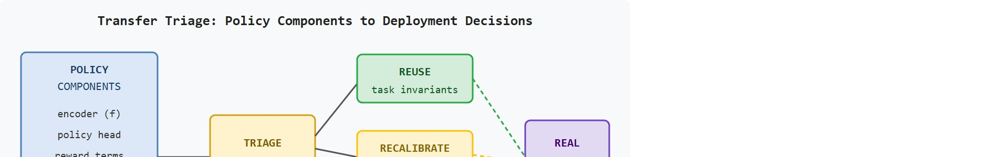

"The skill transferred. The artifact it was tuned on did not. Knowing the difference is most of the job."
A Careful Control Loop

This section assumes familiarity with the reality gap and its sources, covered in section 20.1. The transfer ledger introduced here is put to work in section 20.3, which shows how domain randomization and system identification determine which components can be reused and which must be adapted. The same reuse-versus-recalibrate distinction recurs in Part V alongside online adaptation and continual learning strategies.
A robot trained for ten million simulated grasps walks onto a real table and freezes after two tries. The policy was excellent in simulation. The problem was not the strategy: it was that the reward relied on a privileged depth channel, the normalization statistics assumed frictionless plastic, and the termination logic fired on a simulator artifact that never appears on hardware. Knowing which parts of a policy survive the crossing is now the decisive skill in deploying RL agents. You will build a transfer ledger that classifies every learned component into reuse, recalibrate, constrain, or discard, and learn to read the coupling between simulator assumptions and policy failure modes before the first hardware trial.
The reality gap from Section 20.1 does not close uniformly across a policy. Some parts cross it untouched while others shatter. Take the ANYmal quadruped, a four-legged robot developed by ETH Zurich and ANYbotics for industrial inspection, trained in Isaac Lab (NVIDIA's GPU-accelerated simulator that runs thousands of parallel robot environments at once) at ETH Zurich. The gait-phase encoder crosses to hardware intact. But the friction coefficient randomized over $[0.4, 1.0]$ in simulation, the 50 Hz control assumption, and the simulated joint-velocity range all need fresh hardware evidence. A useful transfer ledger names each of these explicitly: the randomized variables, the simulator assumptions, the on-robot measurement that confirms them, and any demonstration-learning handoff. It records them in one auditable artifact rather than a single sim-to-real verdict.
As Figure 20.2A illustrates, transfer is selective: high-level task structure may travel well, while sensing, timing, contact, and safety margins need fresh evidence on the robot.
That selectivity is exactly why a policy cannot be judged as a single block. An RL policy should be decomposed before deployment into representation, policy structure, value estimates, reward terms, low-level actuation, and evaluation metrics. These pieces do not deserve the same transfer claim because each one couples to different simulator assumptions.
When that coupling goes unaudited, the result is brutal: a policy that works in simulation but fails on hardware is not a policy; it is a very expensive proof that the simulator assumptions were wrong.
The key question is practical: which learned quantities can be reused, which must be calibrated, and which must be thrown away before the first hardware trial? This is called the transfer triage decision, and it determines whether the first hardware session takes two trials or two hundred. Figure 20.2B lays out this triage as a pipeline: policy components enter a ledger audit and are routed into one of four buckets before deployment.

Transfer is strongest when the learned quantity describes an invariant of the task rather than an accident of the simulator. "Move until contact, then regulate force" is more portable than "move 7.5 cm because the simulated drawer opens at that displacement."
Before assigning a bucket to any component, it helps to have a vocabulary for what a policy is made of. The transfer ledger and the four-bucket decision (reuse, recalibrate, constrain, discard) introduced above depend on this decomposition, so it is defined here first and used afterward.
Let a policy be decomposed as $\pi(a_t\mid z_t)$, where $z_t=f(o_{0:t})$ is the learned state representation. The representation $f$ may transfer if it captures geometry, contact phase, or goal relation. The action distribution $\pi$ may fail if the target robot has different torque limits, command latency, backlash, or compliance.
Reward models transfer even less automatically, in practice. Simulator rewards are typically dense, clean, and privileged; the real robot exposes only sparse events, noisy force estimates, delayed vision, and safety interlocks. A reward term that trained the policy well can be invalid as an evaluation metric on hardware.
Reuse holds when the learned quantity describes a topological or contact-phase invariant. "Approach until force exceeds threshold" survives a hardware swap because neither the geometry nor the contact event changes. Reuse fails when the quantity encodes a timing assumption (a fixed step frequency), a magnitude assumption (a specific torque budget), or a sensing assumption (a privileged depth channel absent on the real robot). The earlier these assumptions appear in training, the deeper they embed in downstream weights. A single miscalibrated normalization channel can require hundreds of hardware rollouts to diagnose. In one reported deployment case, teams needed roughly 400 to 600 real trials to re-converge when the mismatch surfaced on hardware, whereas flagging that same channel as recalibrate before deployment let the policy converge in under 20 trials, a roughly tenfold difference in hardware cost traced to one unaudited wrapper parameter. Actual numbers vary by task and hardware, but the direction of the effect is consistent: earlier detection of a miscalibrated channel costs far less than late discovery.
The mechanism is a transfer ledger. Put each quantity into one of four buckets: reuse, recalibrate, constrain, or discard. Reuse task-level structure, recalibrate dynamics and sensors, constrain unsafe actions, and discard simulator-only rewards or privileged state channels.
Input: trained policy $\pi_\theta$ with parameters $\theta$, learned representation $f$, reward terms $\{r_k\}$, normalization statistics $(\mu, \sigma)$, observation space $\mathcal{O}_{\text{sim}}$, action space $\mathcal{A}$
Output: transfer ledger $L = \{(c_i, d_i, g_i)\}$ mapping each component $c_i$ to decision $d_i \in \{\text{reuse}, \text{recalibrate}, \text{constrain}, \text{discard}\}$ and hardware gate $g_i$
So far: every learned component gets enumerated, tested against task-invariance versus simulator-magnitude criteria, and routed into reuse, recalibrate, constrain, or discard, with a hardware gate attached to each decision before deployment. The next part explains why one specific bucket, discard, matters so much: privileged simulator state that has no on-robot counterpart.
Why privileged state matters for real robots. A simulator's physics engine maintains a complete internal world state: exact joint angles, contact normals, object masses, and ground-truth pose. The policy trainer can read any of these directly. A physical robot has only sensor measurements, which are noisy, delayed, and partial. When a policy trains on privileged state, it builds dependencies on information that is absent at deployment. On hardware this produces silent failure: the policy receives zeros or stale values where it expects clean ground-truth inputs, and the resulting action distribution falls outside anything seen during training.
Imagine navigating a city using a map that marks every traffic light green or red in real time. You become so reliant on that overlay that you stop reading the actual intersection. The moment someone hands you a paper map, your route-planning still works, but your moment-to-moment decisions fail because the input you depended on has vanished entirely without warning. A policy trained on privileged simulator state is in exactly this position: the task knowledge is intact, but the missing channel produces silent, bewildering errors that look like strategy failures when they are actually missing-data failures.
How the discard criterion works mechanically. During training, the observation vector $o_t$ may include channels sourced from the simulator's internal state rather than from a sensor model. To identify these, compare each channel's source in the environment configuration against the robot's actual sensor list. Any channel that cannot be computed from onboard sensors alone is privileged. Remove it from $\mathcal{O}_{\text{real}}$ before deployment. If the policy depends heavily on that channel, the reward term that required it must also be replaced by a hardware-measurable proxy before the first hardware trial.
Code Fragment 20.2.1 builds a small transfer ledger for a drawer-opening policy. The output distinguishes reusable task structure from components that need hardware calibration or safety constraints.
# Classify policy components before hardware deployment.
# The ledger prevents simulator-only conveniences from masquerading as transfer.
components = {
"contact_phase_detector": "reuse",
"camera_exposure_threshold": "recalibrate",
"maximum_pull_force": "constrain",
"privileged_hinge_angle_reward": "discard",
}
for name, decision in components.items():
print(f"{name}: {decision}")contact_phase_detector, camera_exposure_threshold, maximum_pull_force, and privileged_hinge_angle_reward into transfer decisions. The ledger makes the deployment review concrete before any hardware trial begins.Expected output: each policy component has a deployment decision. A transfer plan that says "deploy the policy" without this inventory hides the most important engineering choices.
Trace the triage algorithm over five real components of a drawer-opening policy, classifying each with concrete numbers.
Component 1 - contact_phase_detector. It fires when measured fingertip force crosses 2.0 N, an event identical in sim and on hardware. It encodes a contact-phase invariant, so step 2 marks it reuse; gate $g_1$ = 10 hardware approaches, success if contact is detected within 1.0 N of the simulated trigger.
Component 2 - camera_exposure_threshold. Simulated rendering assumes a fixed exposure; the real RGB camera auto-exposes, shifting pixel means by roughly 35 percent. This is a sensing magnitude assumption, so step 3 marks it recalibrate; protocol = 12 hardware frames, re-fit the threshold to the measured histogram.
Component 3 - maximum_pull_force. Simulation allowed up to 80 N of pull; the real drawer rail bends past 40 N. Step 4 marks it constrain with the hard clip $a_t \leftarrow \text{clip}(a_t, -40, 40)$ N before the command reaches the controller.
Component 4 - privileged_hinge_angle_reward. The training reward read the ground-truth hinge angle straight from the physics engine; no onboard sensor produces it. Step 5 marks it discard, removes the channel from $\mathcal{O}_{\text{real}}$, and replaces the reward with a proxy $\tilde{r}$ = (drawer fully open, detected by the wrist camera).
Component 5 - normalization stat for joint velocity. Saved $\sigma_j = 1.2$ rad/s, but the hardware range is $[\underline{o}_j, \overline{o}_j] = [-0.8, 0.8]$, width 1.6 rad/s. Step 6 checks $\sigma_j = 1.2 < 1.6$, so this channel passes the mismatch test and stays as audited recalibrate only if the measured range later narrows. The final ledger has one reuse, two recalibrate, one constrain, one discard entry, each with a numbered gate.
ANYbotics deploys ANYmal locomotion policies trained in Isaac Lab to industrial inspection sites, and the deployment pipeline is a transfer ledger in everything but name: the gait-phase representation is reused across hardware, while actuator latency and joint-friction parameters are recalibrated per unit through a learned actuator network fit to real motor logs. Privileged terrain-height fields used during training are discarded and replaced with proprioceptive estimation on the robot, exactly the reuse-recalibrate-discard split this section formalizes.
Goal. Empirically reproduce the silent normalization failure described in this section and confirm that the ledger's $\sigma_j$ versus hardware-range check catches it before deployment.
Tools. Python, Gymnasium, Stable-Baselines3 (with VecNormalize, a wrapper that rescales observations and rewards using a running mean and standard deviation so the policy sees roughly unit-scale inputs), and a PyBullet or MuJoCo continuous-control task such as HalfCheetah-v4 or Reacher-v4. About 20 to 30 minutes.
Steps. Train a short PPO (Proximal Policy Optimization, a widely used on-policy RL algorithm) policy (50k steps is enough) wrapped in VecNormalize; save the policy and the normalization statistics. Reload with VecNormalize.load(stats_path, env) and print venv.obs_rms.mean and np.sqrt(venv.obs_rms.var) for every observation channel. Then simulate a hardware mismatch: scale one observation channel by 0.5 at inference time (mimicking a joint that saturates earlier on real hardware) and roll out the policy.
What to vary. The scale factor on the tampered channel (1.0, 0.75, 0.5, 0.25) and which channel you tamper with.
What to observe. Episode return as the scale factor drops, and whether the saved $\sigma_j$ for that channel exceeds the new effective input range. You should see return collapse smoothly as the distribution shifts while the policy weights are untouched, demonstrating that the failure is a data-distribution failure, not a strategy failure, and that the per-channel $\sigma_j$ audit flags the exact channel responsible before any real robot is involved.
In practical RL stacks, Gymnasium, Isaac Lab, Stable-Baselines3, RSL-RL and rl_games (both GPU-parallel RL training libraries built for legged-robot locomotion) can preserve policy checkpoints and rollout metadata. They do not decide what transfers. The builder still has to audit observation channels, action scaling, reward definitions, termination rules, and safety limits.
A common assumption is that sim-to-real transfer is a yes-or-no verdict applied to the entire trained policy: either the policy transfers or it does not. This assumption is wrong in embodied AI because a policy checkpoint is a composite artifact whose components couple to entirely different simulator assumptions. A contact-phase encoder may travel well while the torque scaling, the reward signal, and the normalization statistics all fail independently and for different reasons. The correct mental model treats transfer as a per-component classification: each learned quantity receives one of four decisions (reuse, recalibrate, constrain, or discard) based on whether it encodes a task invariant or a simulator-specific magnitude, timing, or sensing assumption. Declaring that "the policy transfers" without this inventory hides the decisions that determine whether the first hardware session converges in twenty trials or three hundred.
The common mistake is to assume that a transferable representation implies a transferable controller. A vision encoder may localize the handle well while the learned torque policy still fails because the real actuator saturates or arrives late.
Normalization statistics are a silent transfer failure. Consider a locomotion policy trained in Isaac Lab where joint velocities are normalized to a mean of 0 and a standard deviation of 1.2 rad/s under simulation conditions. On hardware the same joints saturate at 0.8 rad/s, shifting the effective input distribution. The policy receives inputs it never saw during training and produces erratic torque commands, not because the task structure is wrong, but because a single wrapper parameter was not recalibrated. Always treat normalization statistics, action scaling factors, and observation clipping bounds as recalibrate entries in the transfer ledger, never as reuse entries.
When using Stable-Baselines3, call VecNormalize.load(stats_path, env) and then inspect venv.obs_rms.mean and venv.obs_rms.var before the first hardware trial. Print those arrays alongside the corresponding hardware sensor ranges: any channel where the saved standard deviation exceeds the hardware physical maximum is a guaranteed input-distribution mismatch that will produce erratic commands. Save this comparison as a plain CSV in the same directory as the policy checkpoint so every reviewer sees the discrepancy without re-running training.
For a legged robot, gait phase and foot-contact reflexes may transfer, but ground friction, motor heating, actuator delay, and fall recovery thresholds must be revalidated. The team should not report one "sim-to-real score" until it can show which parts were reused and which were calibrated on hardware.
The simulator is a very convincing liar. It gets contact forces wrong, friction wrong, actuator delay wrong, and camera noise wrong, all at once, all plausibly. The skill that transfers is not the policy. It is knowing which parts of the policy to trust.
Direction 1: Foundation-model priors for selective transfer. Large vision-language-action (VLA) models pretrained on internet-scale data are being used as frozen priors that supply task-level structure, while a thin hardware-tuned adapter corrects for dynamics mismatch. OpenVLA (Kim et al., 2024, arxiv 2406.09246) demonstrated that a 7B-parameter VLA model, finetuned on as few as 150 hardware demonstrations, achieves robust manipulation transfer across five robot platforms without any explicit sim-to-real pipeline. The key finding is that foundation-model features encode contact semantics that survive hardware variation, whereas low-level timing and torque channels must still be recalibrated per robot.
Direction 2: Learned transfer ledgers via meta-sim-to-real. Rather than hand-coding a transfer triage, recent work trains the triage decision itself. Sim-and-Real Co-training (Zhou et al., CoRL 2024) jointly optimizes a policy on simulation rollouts and a small real-data buffer, learning an automatic per-channel weighting that suppresses simulator-specific gradients and amplifies hardware-consistent ones. This removes the need for a human engineer to decide which channels are privileged, but raises a new question about the minimum real-data budget required before the weighting stabilizes.
Direction 3: Hardware-in-the-loop simulator correction. Instead of accepting simulation as fixed and adapting the policy, the newest direction corrects the simulator from hardware residuals in real time. IRIS (Memmel et al., ICLR 2024) maintains a neural residual dynamics model updated after every real rollout and feeds corrected transitions back into policy training, tightening the transfer gap without additional hardware trials. ETH Zurich's Parkour locomotion work (Zhuang et al., 2024) applied a similar residual-correction loop to bring agile jumping policies to hardware in under 30 real episodes.
Open problem for PhD students. All three directions assume a fixed robot embodiment: the adapter, the co-training weights, and the residual model are each calibrated to one physical unit. When the same policy must run on a fleet of nominally identical robots with different motor wear, cable routing, or sensor calibration drift, it is unknown how to detect that the per-unit transfer model has diverged before a failure occurs in deployment. Designing a distributional alarm that monitors the gap between the learned residual model and incoming hardware telemetry, and triggers selective recalibration only for the diverging units without requiring a full rollout, is an open and practically important problem.
For a simulated grasping policy, identify one component you would reuse, one you would recalibrate, one you would constrain, and one you would discard. What hardware evidence would justify each decision?
The Big Picture promised a transfer ledger that classifies every learned component into reuse, recalibrate, constrain, or discard, and a way to read the coupling between simulator assumptions and policy failure modes before the first hardware trial. The algorithm, worked example, ANYmal case study, and lab above deliver exactly that: each names the specific simulator assumption (friction, exposure, torque budget, privileged state), the bucket it falls into, and the hardware gate that confirms the decision. The remaining question is procedural, not conceptual: before the first hardware trial, write the four-row ledger down as a versioned artifact, attach a gate to every reuse and recalibrate row, and refuse to report "the policy transfers" until every row has hardware evidence behind it.
Each learned quantity needs an explicit deployment status before the idea becomes useful. A policy checkpoint is not a single artifact from a transfer perspective. It contains representations, action distributions, value estimates, normalization statistics, and assumptions about reward and termination.
Because the checkpoint bundles all of those quantities together, the discipline is to pull them apart into distinct claims rather than a single verdict. The graduate-level habit is to separate four claims. The invariance claim says what remains true across sim and real. The calibration claim says what must be measured on hardware. The safety claim says what must be constrained before exploration. The evidence claim says which hardware gate proves the decision was justified.
| Tool or Library | Role in the Topic | Builder Advice |
|---|---|---|
| Gymnasium | Interface compatibility | Use it to check whether the observation and action spaces match between training and evaluation wrappers. |
| Stable-Baselines3 | Policy and normalization artifacts | Use it carefully, because normalization statistics and wrappers are part of what transfers or fails. |
| RSL-RL | High-throughput locomotion training | Use it when testing which locomotion behaviors survive actuator and terrain changes. |
| ROS 2 | Hardware interface validation | Use it to verify that action scaling, timing, and safety interlocks match the policy assumptions. |
| LeRobot | Robot data and policy packaging | Use it to keep datasets, policies, and evaluation metadata tied together during transfer reviews. |
A robust implementation starts with a transfer ledger and a hardware gate. The ledger records the deployment decision for each component. The gate records the smallest hardware test that can falsify that decision.
When transfer fails, ask which ledger decision was wrong. A reuse failure means the task invariant was overestimated. A recalibration failure means the measurement protocol was too weak. A constrain failure means the safety envelope did not cover the robot's actual behavior. A discard failure means a simulator-only shortcut leaked into deployment.
For transfer inventories, compare only construct-matched metrics that are co-computed in one pass on one configuration: same policy checkpoint, same wrapper stack, same normalization statistics, same hardware gate, and the same success definition. Save the ledger and rollout traces together so every "transfers" claim is backed by the same run.
Good sim-to-real engineering does not ask whether "the policy transfers" as one block. It asks which learned quantities transfer, which need calibration, which require constraints, and which must be removed.
Take a policy trained with privileged simulator state and write a four-row transfer ledger: reuse, recalibrate, constrain, and discard. For each row, name the hardware gate that would validate the decision.
Beginner (weekend): Transfer ledger auditor for a Gymnasium policy. Train a simple reaching policy in a PyBullet or Gymnasium environment (such as FetchReach-v2), then write a Python script that loads the saved VecNormalize statistics and prints a four-row transfer ledger (reuse, recalibrate, constrain, discard) for each observation channel. The key challenge is learning to distinguish channels sourced from privileged simulator state (ground-truth object pose) from channels a real sensor could provide (wrist force, joint angle), using only the environment's observation-space metadata.
Intermediate (1 to 2 weeks): Sim-to-sim transfer gap measurement with MuJoCo and Isaac Lab. Train a drawer-opening policy in Isaac Lab with domain randomization on friction and mass, then evaluate the same checkpoint in a MuJoCo reimplementation of the same scene with different default physics parameters. Build a per-component ledger that records which reward terms, normalization statistics, and action-scaling factors degrade the most across the two simulators, using rollout success rate and mean episode return as gates. The key challenge is keeping the observation contract and action space identical between the two environments so that performance differences reveal physics coupling rather than interface mismatches.
Intermediate (1 to 2 weeks): ROS 2 transfer gate harness for a LeRobot policy. Take a LeRobot manipulation policy trained in simulation and build a ROS 2 node that applies the transfer ledger at runtime: it clips actions to hardware-safe torque limits (constrain), loads recalibrated normalization statistics from a YAML file, and blocks any privileged observation channel from reaching the policy (discard). Run the harness in a ROS 2 simulation using a URDF model, verify that the gating logic fires correctly on injected out-of-range inputs, and log the ledger decisions alongside each rollout trace. The key challenge is wiring the per-component gating logic cleanly into the ROS 2 topic pipeline without adding latency that shifts the timing distribution the policy assumed during training.
This section turned what transfers and what does not into a testable embodied-learning contract: define the loop, choose the tool, save one comparable artifact, and diagnose failure by interface. Next, continue with Section 20.3, where the same evaluation habit carries into the next reinforcement-learning decision.
Kumar, A. et al. (2021). RMA: Rapid Motor Adaptation for Legged Robots. RSS.
Introduces RMA, which separates a base policy trained with full privileged state from a lightweight adaptation module trained online from proprioception only. Read Section 3 for the two-phase training procedure; RMA is one of the clearest demonstrations that explicit adaptation at inference time outperforms domain randomization alone for legged locomotion.
This paper shows dynamics randomization for transferring learned control policies.
Tan, J. et al. (2018). Sim-to-Real: Learning Agile Locomotion for Quadruped Robots. RSS.
This work is a clear example of transferring locomotion policies from simulation to hardware.
Demonstrates that training with randomized visual and physical parameters forces policies to learn features invariant to simulator appearance, enabling direct transfer to a physical robot without fine-tuning. Read to understand the gap between visual sim-to-real and dynamics sim-to-real; this paper focuses on the visual side.
NVIDIA Isaac Lab documentation.
NVIDIA's GPU-accelerated robot learning framework that runs thousands of parallel environments on a single GPU. Read the documentation for task configuration, domain randomization APIs, and the sim-to-real export path; massively parallel training with Isaac Lab is how locomotion and dexterous manipulation policies achieve the sample counts needed for sim-to-real transfer.
Drake is relevant when transfer work needs explicit dynamics, constraints, and system identification.